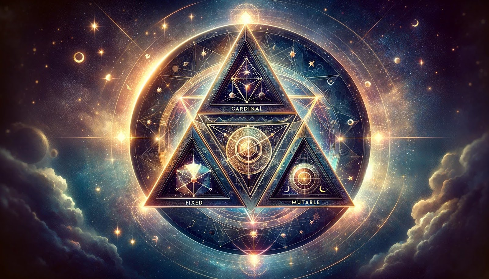

In astrology, modalities refer to the three categories—Cardinal, Fixed, and Mutable—that divide the twelve zodiac signs, each representing a different type of energy and approach to life. These modalities are crucial in understanding the dynamics of personality and behavior, as they describe the mode of operation and reaction to various situations. Cardinal signs are initiators, Fixed signs are stabilizers, and Mutable signs are adaptors. The modality of a sign provides insight into how an individual engages with the world, approaches change, and deals with challenges. This framework adds depth to the astrological analysis, offering a nuanced view of the complex interplay between different forces in a person's chart, and highlighting the diverse ways in which people can express the energies of their signs.
Modalities also play a significant role in forecasting and compatibility assessments. By understanding the modality of each sign, astrologers can predict how different personalities might interact, how an individual might respond to future events, or how they can best navigate upcoming challenges. This understanding enriches the astrological interpretation, making it a more dynamic and useful tool for guidance. When considering the whole chart, the dominant modality can indicate a prevailing approach to life, whether it's leading with action (Cardinal), seeking stability (Fixed), or embracing change (Mutable). Thus, modalities offer a layer of insight that complements the elemental and sign-based analysis in astrology.
The modalities in your astrological chart shape the way you initiate action, maintain progress, and adapt to changes in your life. A chart dominated by Cardinal signs suggests a proactive nature, always ready to start new projects and lead initiatives. If Fixed signs predominate, it indicates a focus on sustainability, reliability, and resistance to change, highlighting a person's capacity for endurance and steadfastness. A Mutable-heavy chart, on the other hand, reflects flexibility, adaptability, and a talent for navigating transitions with ease. The balance of these modalities in your chart can reveal your overall approach to life's challenges and opportunities, showing whether you're more inclined to take charge, maintain the course, or go with the flow. Understanding this aspect of your chart can provide valuable insights into your personal and professional dynamics, helping you to leverage your strengths and work on areas that may need more flexibility or stability.
The influence of modalities extends beyond individual predispositions to affect interpersonal relationships and group dynamics. For instance, a Cardinal individual might excel in leadership roles but could benefit from the stabilizing influence of Fixed signs or the adaptability of Mutable signs. Recognizing the modal influences in your chart encourages a more nuanced self-awareness, enabling you to capitalize on your natural modal strengths while identifying strategies to balance out any modal extremes. This awareness can guide personal growth, career choices, and relationship management, offering a roadmap for a more harmonized and fulfilling life.

Cardinal signs—Aries, Cancer, Libra, and Capricorn—carry the energy of beginnings, leadership, and initiative. Each of these signs marks the start of a new season, embodying the spirit of initiation and new ventures. Aries ushers in spring with its pioneering and courageous spirit, Cancer begins summer with its focus on nurturing and emotional foundations, Libra introduces autumn through harmony and relationship-building, and Capricorn starts winter by setting goals and structures. People with a strong Cardinal influence in their charts are natural leaders who excel at taking charge and setting things in motion. They are dynamic, ambitious, and often the catalysts for change in their personal and professional circles, driven by an inner compulsion to initiate and lead.
However, this forward-moving energy can sometimes manifest as impatience or a tendency to start new projects without finishing existing ones. Cardinal signs are known for their drive and determination, but this can lead to challenges in seeing things through to completion or being too quick to jump into new ventures. Balancing this initiating energy with persistence and patience is key for Cardinal-dominated individuals, ensuring that their innovative ideas and leadership qualities are fully realized and brought to fruition.
Having a strong Cardinal energy in your astrological chart signifies a proactive approach to life. Individuals with dominant Cardinal signs are often at the forefront of action, not shying away from making decisions or taking the lead in various situations. This quality makes them excellent initiators and pioneers, always ready to embrace new challenges and direct their lives with confidence and assertiveness. In professional settings, Cardinal individuals often rise to leadership positions, as they possess the innate ability to visualize goals and motivate others towards achieving them. Their dynamic nature allows them to respond to changing circumstances with innovative solutions, making them invaluable in fast-paced or evolving environments.
However, the challenge for those with a significant Cardinal presence in their chart lies in maintaining momentum and following through on their initiatives. The initial burst of energy and enthusiasm characteristic of Cardinal signs can wane, leading to unfinished projects and unmet potential. To fully harness the power of their Cardinal energy, such individuals may need to develop strategies for sustaining effort over the long term, perhaps by pairing up with more Fixed or Mutable energies that can offer the perseverance and adaptability needed to see things through. Recognizing and addressing this tendency can lead to a more balanced and productive expression of their innate leadership qualities.
For individuals with a predominant Cardinal modality, embracing their natural leadership and initiative while seeking balance can lead to a fulfilling and impactful life. Recognizing the strength of their ability to start new ventures and inspire others is crucial, as is developing strategies to complement their initiating energy with staying power. Incorporating practices that enhance focus and persistence, such as setting clear goals, breaking projects into manageable tasks, and celebrating milestones, can help Cardinal individuals maintain their momentum. Additionally, learning to delegate and collaborate effectively can leverage their leadership skills while ensuring that projects are carried to completion with the support of a team.
Balancing Cardinal qualities also involves cultivating patience and openness to the ideas and pacing of others, especially those with strong Fixed or Mutable modalities. Developing an appreciation for the process, not just the initiation of new projects, can enrich the Cardinal approach, allowing for a more rounded and inclusive leadership style. By integrating these strategies, those with a strong Cardinal influence can maximize their potential for initiating change and innovation while building a legacy of completed projects and nurtured relationships that stand the test of time.

Fixed signs—Taurus, Leo, Scorpio, and Aquarius—embody stability, determination, and persistence. These signs fall in the middle of each season, representing the heart of spring, summer, autumn, and winter, when the season is most established and unwavering. Taurus brings steadfastness and a love for life's pleasures, Leo exudes confidence and creative power, Scorpio offers depth and intense focus, while Aquarius presents vision and innovation. Individuals with a strong Fixed influence in their chart are known for their reliability and ability to see things through to completion. They are the builders and sustainers, often resistant to change, holding firm to their principles and goals. This resolute nature allows them to achieve great things, but it can also lead to stubbornness and an unwillingness to adapt when flexibility might be beneficial.
The strength of Fixed signs lies in their ability to maintain focus and exert effort over long periods, making them excellent at bringing stability and consistency to both their personal and professional lives. Their determination is unmatched, often making them the backbone of any project or endeavor they are part of. However, this same strength can become a limitation if it turns into rigidity. The challenge for those with predominant Fixed energy is to learn when to hold firm and when to yield, finding the right balance between perseverance and adaptability.
If you have a lot of Fixed influence in your astrological chart, you are likely characterized by your depth of conviction, loyalty, and a strong sense of purpose. This enduring energy equips you with the resilience to overcome obstacles and challenges, often making you a pillar of strength in both your personal circles and professional environments. Fixed signs are not easily swayed by external pressures, which allows them to pursue their goals with a single-minded focus. This can lead to significant achievements, as their unwavering commitment drives them to work tirelessly until their objectives are met.
However, the Fixed modality's resistance to change can sometimes manifest as inflexibility, making it difficult for these individuals to adapt to new circumstances or alternate viewpoints. This steadfastness, while a virtue in situations requiring stability, can become a hindrance in dynamic environments where adaptation and compromise are necessary. Learning to balance their innate persistence with an openness to new ideas and experiences is crucial for those with strong Fixed energy, ensuring that their determination serves them well without limiting their growth or potential for innovation.
For individuals dominated by Fixed energy, cultivating flexibility and openness while maintaining their inherent strength and stability is key to personal growth and success. Embracing change and considering alternative perspectives does not have to undermine your core values or goals; rather, it can enhance your ability to achieve them by allowing for more adaptive strategies and solutions. Engaging in practices that encourage mental and emotional flexibility, such as mindfulness meditation or creative problem-solving exercises, can be beneficial. These practices can help soften the edges of a Fixed nature, making it easier to navigate the inevitable changes and uncertainties of life.
Additionally, cultivating relationships with those who embody Cardinal or Mutable qualities can introduce a dynamic energy that complements and balances the Fixed nature. Such interactions can inspire adaptability and spontaneity, offering new ways of thinking and being that enrich the Fixed individual's experience and approach to life. By intentionally integrating more fluid and adaptable practices into their routines, those with strong Fixed energy can harness their natural strengths more effectively, achieving their goals with both determination and grace.

Mutable signs—Gemini, Virgo, Sagittarius, and Pisces—mark the end of each season, embodying the energy of transition and flexibility. These signs are characterized by adaptability, versatility, and a natural ability to navigate change. Gemini's airy nature brings intellectual curiosity and a gift for communication, Virgo's earthy presence offers analytical precision and a service-oriented approach, Sagittarius ignites a fiery quest for knowledge and exploration, and Pisces brings a watery depth of empathy and intuition. If you have a lot of Mutable influence in your chart, you are likely to be a highly adaptable individual, capable of adjusting to new situations with ease and grace. This flexibility allows you to see life from various perspectives, making you an excellent communicator and mediator. Your ability to change and evolve makes you naturally resilient, always able to find your footing, no matter how the ground may shift beneath you.
However, this constant adaptability can sometimes lead to indecisiveness or a lack of direction, as Mutable individuals might find it challenging to commit to a single path or viewpoint. The versatility that allows them to flow with life's changes can also make it difficult for them to establish a firm sense of self or maintain consistency. For those with significant Mutable energy, finding a balance between adaptability and commitment, between being open to change and holding on to a core set of values and goals, is key to harnessing the full potential of this dynamic energy.
Mutable energy plays a crucial role in facilitating adaptation and embracing change, acting as the zodiac's agents of transformation. In an astrological chart, a strong presence of Mutable signs signifies an individual who thrives in fluid environments and can easily pivot in response to shifting circumstances. This ability to morph and adjust is particularly valuable in times of transition, allowing Mutable-dominant people to navigate life's inevitable ebbs and flows with relative ease. They are the ones who can let go of the old to make way for the new, often leading the way in innovation and creative problem-solving. Their innate understanding that change is the only constant makes them resilient and open-minded, ready to explore new horizons and ideas without being tethered by past conventions.
However, the very strength of Mutable energy in adapting to change can also manifest as a challenge in maintaining focus and following through on long-term projects. The tendency to shift gears or change direction can lead to scattered energies and unfinished endeavors. For individuals with a prominent Mutable influence, cultivating practices that enhance concentration and perseverance, such as setting clear goals and developing structured routines, can provide the necessary grounding. Embracing their fluid nature while implementing strategies to build consistency and depth can lead to a harmonious balance, enabling them to utilize their adaptability in constructive and fulfilling ways.
For those with a significant Mutable influence in their charts, enhancing and balancing their natural adaptability involves consciously integrating stability into their lives. While their inherent flexibility allows them to thrive in change, establishing routines and rituals can offer the grounding needed to channel their versatile energies effectively. Engaging in practices that promote mindfulness and presence, such as meditation or yoga, can help Mutable individuals cultivate a centeredness that anchors their fluid nature. Setting regular check-ins with themselves to reassess goals and intentions can also provide direction, ensuring that their adaptability serves their long-term vision rather than leading them off course.
Balancing Mutable energy also means embracing the strength of commitment in certain aspects of life, whether in relationships, career paths, or personal projects. Learning to discern when to flow with change and when to stand firm can amplify the effectiveness of their natural gifts. Incorporating elements from the Cardinal and Fixed modalities, such as initiating new projects with clear objectives or maintaining perseverance in the face of challenges, can enrich the Mutable approach, leading to a more rounded and dynamic expression of their inherent talents and capabilities.
Understanding the modalities in astrology—Cardinal, Fixed, and Mutable—can provide deep insights into personal dynamics and how individuals approach various aspects of life. Recognizing whether you have a dominance of one modality over the others can illuminate your natural inclinations, such as whether you're predisposed to initiate action, maintain stability, or embrace change. For those with a strong Mutable influence, this awareness can help in appreciating your adaptability and in identifying areas where you might benefit from incorporating more initiating or sustaining energies. This holistic view of your astrological makeup allows for a nuanced understanding of your personality, offering a blueprint for personal development and interpersonal relationships.
Leveraging this knowledge in daily life can enhance self-awareness and improve interactions with others. By understanding your modal strengths and weaknesses, you can tailor your approach to challenges and opportunities in a way that aligns with your inherent nature, while also seeking growth in less dominant areas. Acknowledging the modal composition of those around you can also foster empathy and cooperation, as you recognize and appreciate the diverse approaches and perspectives each modality brings to the table.
For individuals seeking personal growth within the framework of astrological modalities, tailored strategies can be particularly effective. If your chart is dominated by Mutable energy, focusing on goal-setting and consistency can enhance your natural adaptability, turning it into a strategic asset rather than a source of indecision. Engaging in activities that require sustained effort, such as learning a new skill or committing to a long-term project, can develop your capacity for persistence. Additionally, practicing decision-making in low-stakes environments can bolster your confidence in making commitments.
For those looking to balance or complement their Mutable nature, exploring activities associated with the Cardinal and Fixed modalities can be enriching. Embracing leadership roles or initiating new ventures can channel Cardinal energy, fostering a sense of direction and purpose. Cultivating Fixed qualities, such as reliability and patience, through practices like regular meditation or dedicating time to a single hobby, can provide stability to the Mutable fluidity. By consciously integrating these diverse modal energies, Mutable individuals can achieve a harmonious balance, enhancing their ability to navigate life's complexities with both flexibility and determination.

The interaction of modalities within an astrological chart creates a dynamic interplay that shapes an individual's approach to life, challenges, and relationships. A chart that features a balanced distribution of Cardinal, Fixed, and Mutable signs suggests a person who can initiate action, sustain efforts, and adapt to changes with relative ease. This balance allows for a well-rounded character capable of responding effectively to varying circumstances. However, most charts tend to show a dominance of one or two modalities over others, leading to a predominant mode of operation. For instance, a chart with strong Cardinal and Mutable energies but less Fixed influence might depict someone who is great at starting projects and adapting to new ideas but may struggle to see things through to completion. Understanding these interactions is key to recognizing personal patterns, strengths, and areas for growth, guiding individuals in leveraging their natural tendencies and developing underrepresented qualities for a more balanced approach to life.
Conversely, a chart where one modality significantly outweighs the others can lead to challenges. For example, an overwhelming presence of Fixed energy might make a person resistant to change, struggling with flexibility, whereas a lack of Cardinal energy could manifest as difficulty in taking initiative or making decisions. Recognizing how these modal energies interact within your chart is not only insightful for personal understanding but also for identifying how you might best contribute to team dynamics or partnerships. By acknowledging your modal composition, you can intentionally cultivate practices or seek experiences that bring balance, enhancing your ability to navigate life's complexities with a more integrated approach.
Modal dominance in an astrological chart can greatly influence an individual's personality and behavior. For example, a dominance of Cardinal energy can make a person action-oriented and a natural leader, but they might also be prone to impulsiveness and constantly seeking new beginnings without follow-through. On the other hand, a deficiency in Cardinal signs might result in a lack of initiative or difficulty in taking the first steps in projects or decisions. Similarly, an excess of Fixed energy can provide great determination and reliability, yet it can also lead to stubbornness and an inability to adapt to new situations. A lack of Fixed signs might manifest as an inconsistency or a tendency to give up too easily when faced with obstacles. Mutable dominance allows for flexibility and adaptability, but can also create a tendency towards indecision and a lack of direction, while a lack of Mutable energy can result in rigidity and difficulty adjusting to change.
Understanding the implications of modal dominance and deficiency can be incredibly valuable in personal development and achieving goals. By recognizing these tendencies, individuals can take proactive steps to cultivate the underrepresented modalities in their charts, thus striving for a more balanced approach to life. For instance, someone with minimal Cardinal energy might benefit from setting clear goals and deadlines to foster a sense of direction and initiative. Conversely, those with an overwhelming amount of Fixed energy might practice embracing change through small, manageable adjustments to their routine, helping to gradually increase their adaptability. Acknowledging and working with one's modal strengths and weaknesses allows for a more nuanced understanding of oneself, facilitating growth and improvement in various aspects of life.
The compatibility and challenges between different modalities play a significant role in interpersonal dynamics and relationships. Cardinal signs often pair well with Fixed signs, as the initiating nature of Cardinal can spark new ventures that Fixed signs can sustain and bring to fruition. However, the assertive nature of Cardinal signs can sometimes clash with the steadfastness of Fixed signs, leading to power struggles or conflicts over control and change. Mutable signs, with their adaptable nature, can harmonize with both Cardinal and Fixed energies, providing flexibility and understanding. However, the indecisiveness of Mutable signs might frustrate the more directive and stable Cardinal and Fixed signs, respectively. Relationships between similar modalities can also present challenges; for instance, two Cardinal signs might struggle for leadership, while two Fixed signs might find it hard to adapt to each other's immovable positions, and two Mutable signs might lack direction and decisiveness.
Understanding the modal interactions can greatly enhance relationship dynamics by highlighting areas for growth and compromise. Recognizing that a partner's Fixed nature is a source of strength and stability, rather than stubbornness, can lead to greater appreciation and patience. Similarly, acknowledging the value in a Mutable partner's flexibility rather than seeing it as fickleness can foster a more supportive and understanding relationship. For Cardinal signs, learning to share the lead and embrace moments of stillness can enrich connections. By appreciating the unique contributions of each modality, individuals can navigate their relationships more effectively, using their differences as opportunities for growth and mutual support rather than sources of conflict.
Navigating relationships through the lens of modalities offers a unique perspective on interpersonal dynamics, highlighting how different approaches to change and action can complement or challenge each other. Understanding your own modal strengths and tendencies, as well as those of your partner or peers, can illuminate paths to harmony and areas where conscious effort may be required to bridge differences. For instance, a Cardinal individual's drive and ambition can be both inspiring and overwhelming for a Mutable partner, who values flexibility and change. In this scenario, recognizing and valuing the Mutable partner's adaptability and openness can provide the Cardinal individual with a broader perspective, potentially leading to more innovative and inclusive approaches to their shared goals and challenges.
Conversely, a relationship between a Fixed and a Mutable individual might encounter friction in the Fixed partner's desire for stability and predictability conflicting with the Mutable partner's need for variety and change. Here, finding common ground in shared values and long-term objectives can help both partners appreciate their different approaches to achieving these goals. The Fixed individual can offer the security and consistency that allows the Mutable partner to explore and adapt within a safe framework, while the Mutable individual can introduce the Fixed partner to new ideas and experiences, enriching their life together. By leveraging the insights provided by modalities, individuals can navigate their relationships with greater empathy and understanding, transforming potential conflicts into opportunities for growth and deeper connection.
Understand your birth chart, moon sign, moon phase and more
Sign up to recieve free daily readings, insights, horoscopes and more